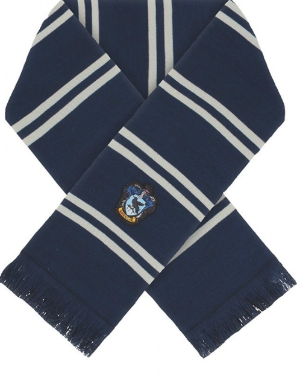

Ravenclaw Atkısı

Renk: Gece Mavisi ve Bronz
Model: Saçaklı Püsküllü Standart Boy
Açıklama: Hogwarts'ın bilge ve akıllı Ravenclaw üyeleri için tasarlanmış, özgün renk kombinasyonuna sahip kaliteli günlük örgü atkı.

Renk: Gece Mavisi ve Bronz
Model: Saçaklı Püsküllü Standart Boy
Açıklama: Hogwarts'ın bilge ve akıllı Ravenclaw üyeleri için tasarlanmış, özgün renk kombinasyonuna sahip kaliteli günlük örgü atkı.